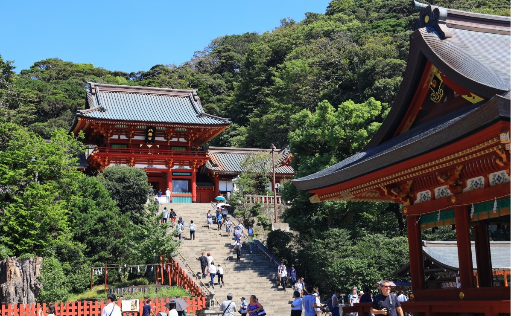
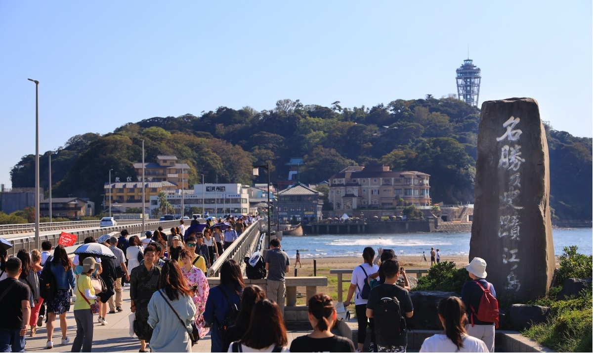
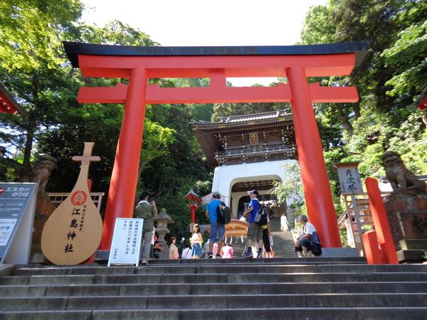

日本語
日本語
 简体中文
简体中文
Kamakura
Kamakura is a tourist destination located in Kanagawa Prefecture, next to Tokyo. It is popular as a day trip destination since it is about an hour by train from Tokyo.
Kamakura City is located on the western coast of the Miura Peninsula in Kanagawa Prefecture.
"Kamakura" is the place where the "Kamakura Shogunate," the first samurai government in Japan, was established during the "Kamakura period."
Therefore, there are many spots related to Minamoto no Yoritomo, the shogun who established the Kamakura Shogunate.
Due to the strong connection between samurai and Buddhism, there are many temples as well as shrines, with over 100 temples in Kamakura City.
Among them, the "Kamakura Gozan" temples, which are of high rank, are a must-see.
Surrounded by mountains on three sides (east, west, and north) and facing the sea to the south, Kamakura is also known as a scenic spot.
In recent years, it has also become known as a sacred place for the popular basketball manga "Slam Dunk," not only in Japan but worldwide.
Transportation:
From JR Ueno Station, take the JR Tokaido Line/JR Yokosuka Line to Kamakura Station.
After that, take the Enoshima Electric Railway, which offers views of the sea. Purchase a one-day pass for 800 yen from Kamakura Station.
Kamakura Station - Komachi Street Shopping District
After getting off the train at Kamakura Station, first visit the Komachi Street Shopping District at the east exit.
Komachi Street Shopping District is 350 meters long and has many shops.

Kamakura Station - Tsurugaoka Hachimangu Shrine
Walking through Komachi Street Shopping District, you will see a red shrine. That is Tsurugaoka Hachimangu Shrine. Established in 1191 by Minamoto no Yoritomo, this historic shrine enshrines three deities: Emperor Ojin, Empress Jingu, and Himegami. Its majestic appearance is truly a symbol of Kamakura.
Enoden "Hase Station" - Hasedera Temple
Hasedera Temple, also known as "Hase Kannon," is a beautiful temple in Kamakura. It is called the "Temple of Flowers" because some flowers are always in bloom throughout the year.
The Kannon here is special.
The main deity is an 11-faced Kannon Bodhisattva, about 9.18 meters tall, making it one of the largest wooden statues in Japan.

Enoden "Hase Station" - Great Buddha of Kamakura
The main statue of Kotoku-in, known as the "Great Buddha of Kamakura," is a national treasure. This bronze statue of Amida Nyorai seated is about 11 meters tall and weighs approximately 121 tons. Although it is not as large as the Great Buddha of Nara, it is still quite impressive.

Enoden - Kamakura High School Front
The crossing in front of Kamakura High School is featured in the opening scene of the popular 1990s high school basketball anime "Slam Dunk."
The crossing with retro trains and the sea visible beyond the tracks is a scenic spot.

Enoden - Enoshima
Enoshima is a great final spot. You can relax while watching the sunset by the sea before returning to Tokyo, completing your day trip.
If you have the energy, cross the bridge to visit Enoshima Shrine. The three shrines on Enoshima Island—Hetsunomiya, Nakatsunomiya, and Okutsunomiya—are collectively known as Enoshima Shrine. The goddess enshrined here is the guardian deity of the sea, and the shrine is famous as a power spot for enhancing luck in money, love, competition, and the arts.

Enoshima Shrine
